Purification of stilbene synthase from Phaseolus vulgaris and determination of its catalytic activity
Abstract: Stilbene Synthase (STS) is an important synthase used in the synthesis of stilbene compounds. Stilbene compounds are the general name of the compound whose parent nucleus is stilbene. We need to determine in Phaseolus vulgaris whether the stilbene synthase has the activity of common stilbene synthase. Until now, stilbenes had not been found in Phaseolus plants. In this experiment, we used transgenic technology, His column, Q column, LC-MS and other techniques to explore the activity. In this experiment, we successfully demonstrated that Phaseolus vulgaris contains active stilbene synthase. This is the first active stilbene synthase found in Phaseolus plants. Phaseolus plants also have the ability to produce stilbenes.
Keywords: Stilbene synthase, Phaseolus vulgaris, His column, Q column, PvSTS
Introduction
The phenyl propionic acid metabolic pathway, as a unique metabolic pathway, is a kind of secondary metabolic product generation mode common in most plant species, aiming to provide flavonoid glycosides, anthocyanins, and various polymeric lignin substances through the phenyl propionic acid metabolic pathway. Flavonoids can be used to help plants resist UV damage, some flavonoid glycosides and isoflavone glycosides can also be used as inducers to promote the expression of nodulation genes in rhizobia bacteria, anthocyanins can be used to participate in the synthesis of plant pigments, poly lignin has structural support and functions as a variety of plant antitoxins [1].
These compounds have been found to have a variety of pharmacological biological activities. At present, 23 families and 59 genera of plants (Table 1.) have been able to stilbene compounds [2]. In the terpenoid metabolic pathway of plants, phenyl propionic acid pathway, stilbene synthase can synthesize stilbene derivatives from some metabolized coenzyme A intermediates (such as p-coumaroyl CoA, cinnamyl CoA, etc.) and malonyl CoA as reactants, so this enzyme plays the most critical role in the process of stilbene compound synthesis [3]. Stilbene compounds, often synthesized in plant stress response, are secondary metabolites produced by plants in response to foreign environmental stimuli and belong to terpenoids [1]. With further research, people pay more and more attention to this bioactive compound and elucidating the key enzyme of the synthesis of stilbene compounds, namely, the stilbene synthase, is of great significance to people.
Table 1. Distribution table of stilbene compounds in plant kingdom
| Number | Class | Family |
|---|---|---|
| 1 | Leguminoese | Arachis, Cassia, Sophora, Trifolium, Bauhinia, Ilex, Dalbergia, Pterolobium, Derris, Amorpha, Pterocarpus, Cajanus, Guibourtia, Laburnum, Pericopsis, Schotia, Haplormosia, Youacapoua, Centrolobium |
| 2 | Moraceae | Morus, Artocarpus, Cudrania, Chlorophora |
| 3 | Dipterocarpaceae | Hopea, Shorea, Balanocarpus |
| 4 | Vitacese | Vitis, Parthenocissus, Ampelopsis, Cissus, Rhoicissus |
| 5 | Pinaceae | Pinus, Picea |
| 6 | Polygonsceae | Polygonum, Rheum |
| 7 | Mytaceac | Eucalyprus, Angophora |
| 8 | Combretaceae | Combretum |
| 9 | Myristicaceae | Knema, Virola |
| 10 | Cyperaceae | Carex, Scirpus |
| 11 | Lamiaceme | Scutellaria, Salvia, Vitex |
| 12 | Anacardiaceae | Rhus |
| 13 | Saxifragacesc | Hydrangea |
| 14 | Phytolaccaceae | Petiveria |
| 15 | Liliaceac | Veratrum, Smilax |
| 16 | Fagaceae | Nothofagus |
| 17 | Betulaceae | Alnus |
| 18 | Urticaceae | Toxylon |
| 19 | Umbelliferae | Pleuraspermum, Ferula |
| 20 | Cupressaceae | Juniperus |
| 21 | Gnetaceae | Gnetum |
| 22 | Ericaceae | Gaylussacia |
| 23 | Poaceae | Festuca |
The main way of generating stilbene compounds is the metabolic pathway of phenyl propionic acid [3]. In the metabolic pathway of synthesizing stilbene compounds, the transformation of related organic matter from primary metabolites requires the conversion of three enzymes. First is conversion of phenylalanine to the form of Coenzyme A(CoA) - active thionyl phenylpropionate, phenylalanine is deaminated by phenylalanine lyase (PAL) to form cinnamic acid. And then cinnamic acid is catalyzed by cinnamic acid 4-hydroxylase (C4H) to form p-coumaric acid, and under the action of p-coumaric acid CoA ligase (4CL), a thioester bond is formed at the carboxyl group of p-coumaric acid to produce p-coumaroyl CoA. P-coumaroyl CoA and two malonic monoacyl-CoA can be catalyzed by stilbene synthase (STS) to synthesize secondary metabolites of stilbene (Fig. 1). In addition, p-coumaroyl CoA and other compounds can also enter the flavonoid and isoflavone synthesis pathway under the catalysis of Chalone synthase (CHS) [4].
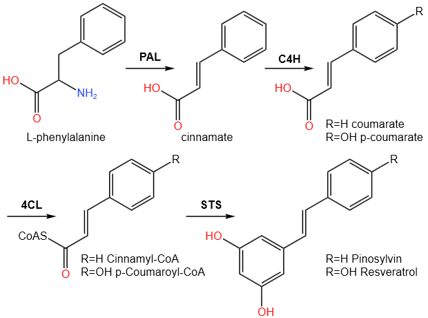
Fig. 1. The metabolic process of stilbene compounds
Stilbene synthase is always produced with stilbene compounds, but now it is found that there may also be an enzyme similar to STS (PvSTS) in Phaseolus vulgaris. This plant is known to contain no stilbene compounds, so it is generally believed that this plant does not contain the physiological activity of stilbene synthase. According to the above picture, the synthesis of stilbene compound is a very complicated process. Its synthesis not only involves many enzymes and intermediates, but also involves the influence of many transcription factors. Therefore, there are many reasons why this plant does not contain stilbene compound but does have related proteins. stilbene compound itself is a secondary metabolite, and its normal function is to fight infection and adversity, so it is not easy to be detected. Mutations in gene regulatory elements can also cause the gene to fail to express the protein properly. But a genetic comparison found a protein in the plant's genome with a sequence similar to that of ordinary stilbene synthase. It is now necessary to prove whether the protein has the activity of ordinary stilbene synthase [5]. The obtained proteins will be purified and analyzed for activity (Fig. 2).
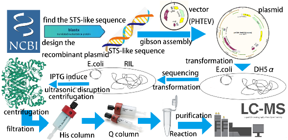
Fig. 2. Experimental principle
The purpose of this experiment was to study whether PvSTS had the catalytic activity of ordinary stilbene synthase. However, since the bean plant itself could not extract this protein, it needed to be expressed and extracted by genetic engineering. The overall study is divided into three parts. 1. Protein expression: Isolate the gene sequence encoding the protein and recombine it with the gene expression vector of engineering bacteria to construct a recombinant plasmid. The recombinant plasmid was introduced into the engineering bacteria for culture and expression [6]. 2. Protein extraction and purification: the engineering bacteria were crushed and centrifuged to extract proteins for separation, and the extracted proteins were purified by His column and Q column to obtain protein samples with purity sufficient for activity determination [7]. 3. Determination of protein activity: the protein and the corresponding substrate are mixed for reaction, and after a certain time, whether the expected product is produced by LC-MS is determined [8].
Experimental results:
During the purification process, we need to know the protein content and purity by electrophoresis. In these experiments we got a series of images to prove the presence of the protein (Fig. 3-5).
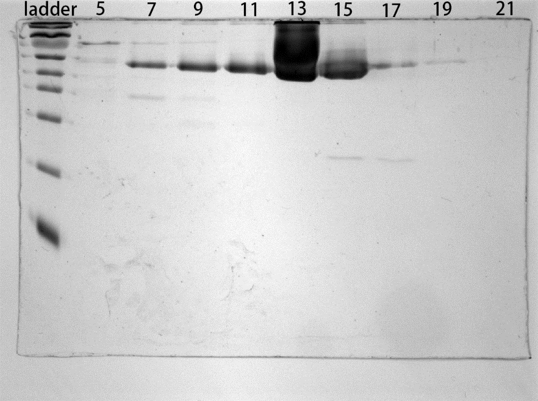
Fig. 3. Electrophoretic results after His column
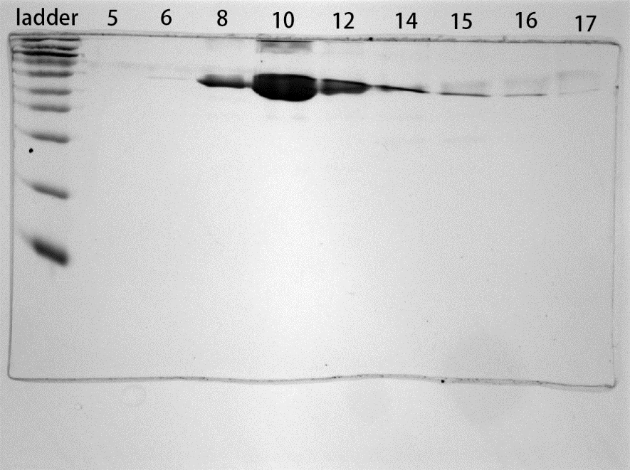
Fig. 4. The result of electrophoresis after Q column
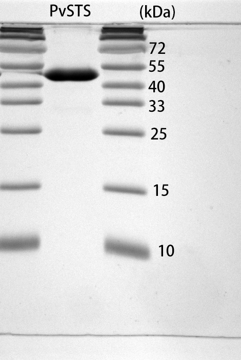
Fig. 5. The result of electrophoresis after purification
The result shows that the purified protein has high purity and almost no impurities, which can be used for the detection of protein activity (Fig. 6-9). The following picture shows that this reaction is very complex. Until now, we have not seen any literature showing any autocatalytic tendency of this reaction. So, we don't seem to have a controlled trial. I think it is almost impossible for autocatalytic reactions to occur in this experiment because all the reactants are in the form of CoA. The reactants bound by CoA are relatively stable and can only undergo enzymatic reactions.
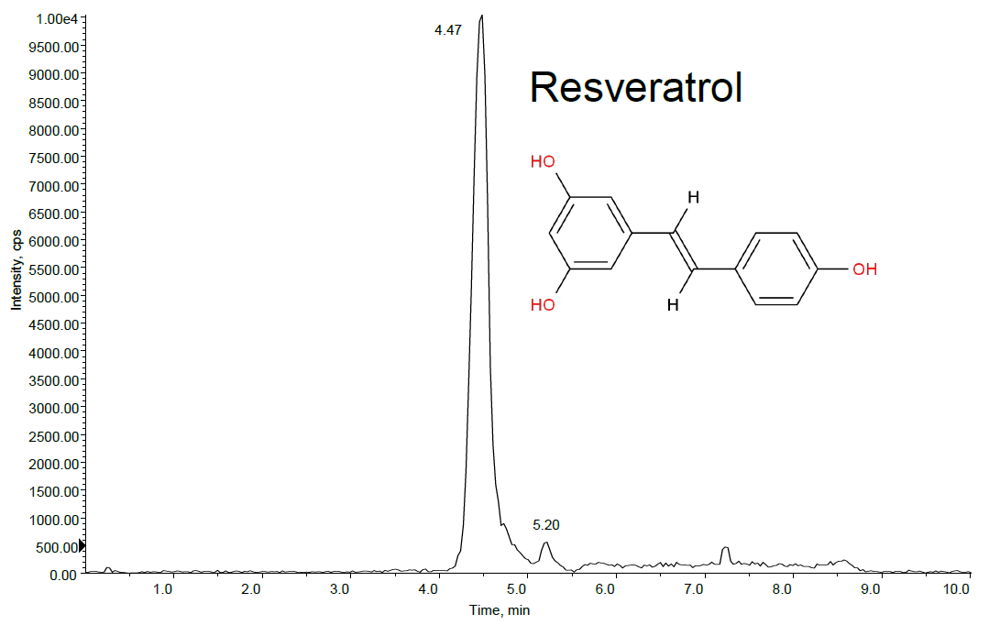

Fig. 6. The result of resveratrol of LC-MS after reaction 1
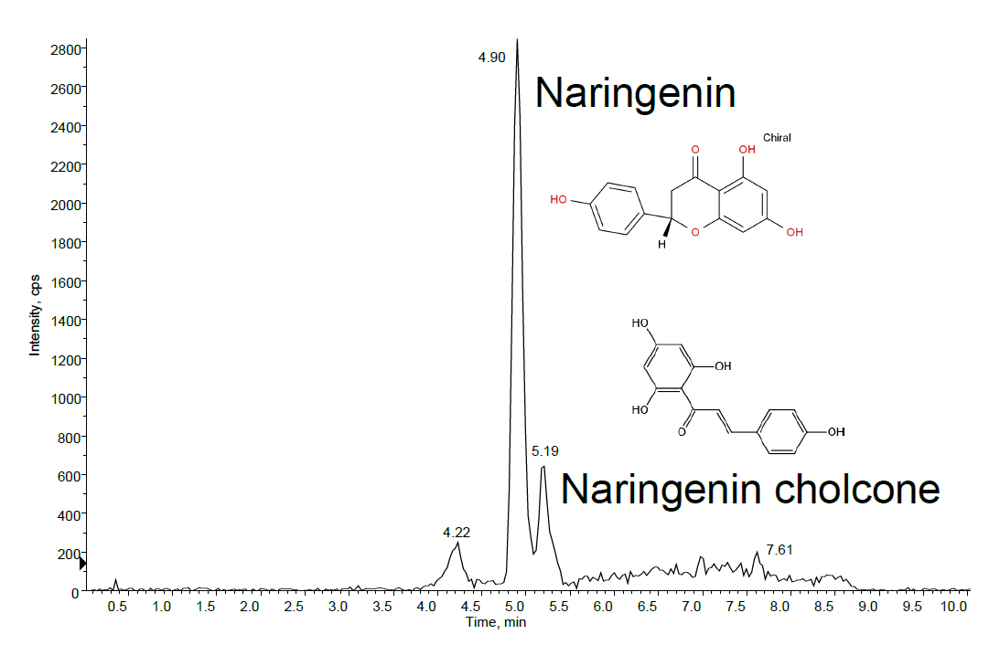
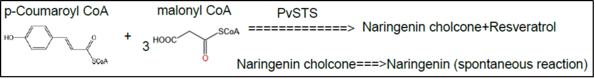
Fig. 7. The result of naringenin of LC-MS after reaction 1
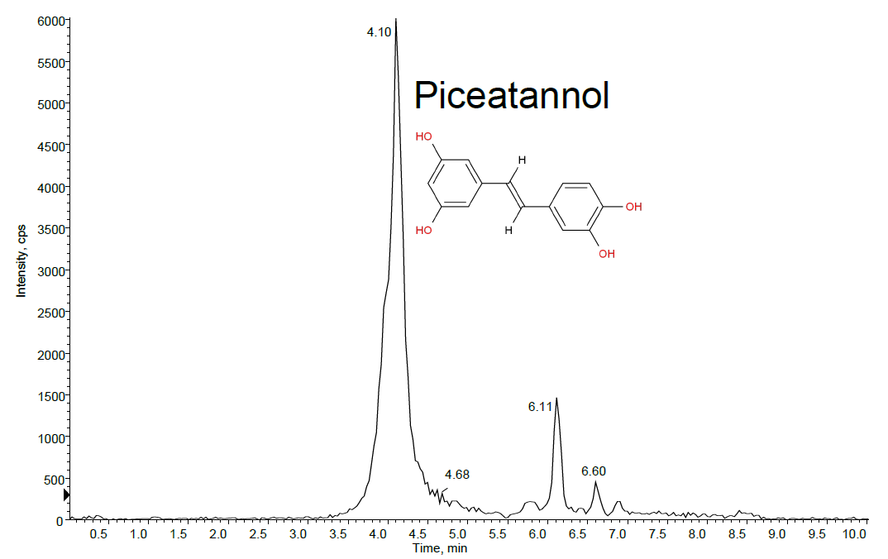

Fig. 8. The result of piceatannol of LC-MS after reaction 2
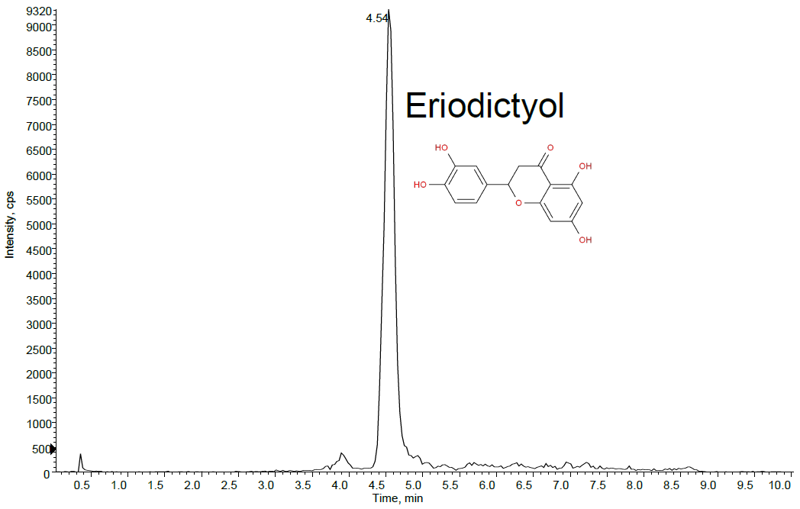
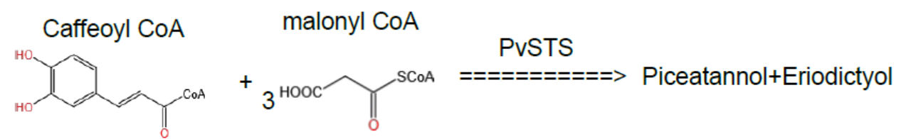
Fig. 9. The result of eriodictyol of LC-MS after reaction 2
After detection, the products that should be obtained by the reaction were detected in the products and the content was high enough to prove that PvSTS had the general catalytic activity of STS protein. The LC-MS identified all of the compounds and it didn’t need positive control.
Finally, experiments showed that PvSTS also had the catalytic activity of common STS proteins.
Discussion
Although no derivatives of STS have been found in the Phaseolus vulgaris, this study suggests that the bean still possesses the enzyme to make the compound. This may indicate that this enzyme is common in plants and plays an irreplaceable role in physiological processes other than the synthesis of stilbene compounds. As an important compound in plant stress response, stilbene derivatives also reflect the importance of STS series proteins in related reactions.
The discovery of PvSTS with general stilbene synthase bioactivity in Phaseolus vulgaris demonstrates that the absence of stilbene compounds is not equivalent to the absence of stilbene synthase. This suggests that the protein, which remains biologically active in plants, may be involved in other vital life processes. At the same time, the mechanism of why this plant has active stilbene synthase but this plant cannot synthesize stilbene compounds remains to be further elucidated.
The consistency in function and sequence of stilbene synthase in different plants also reflects some conservation, which means that this protein may perform more important and critical physiological functions in plants than in the synthesis of stilbene compounds.
Materials and methods
Construction of recombinant plasmid and expression of target protein
The first step is to construct a gene expression vector using Gibson assembly (Fig. 10a). The target gene was amplified by high fidelity PCR in a specific primer to obtain the target gene sequence containing homologous sequences with the plasmid vector. The obtained genes and plasmids were mixed and cultured in Gibson assembly master mix for homologous recombination (Fig. 10b). The obtained recombinant plasmids were separated by electrophoresis. The purified plasmid was obtained. After the correct molecular weight was determined by enzyme digestion electrophoresis, DNA sequencing was performed to confirm the successful construction of the recombinant plasmid. The recombinant gene expression vector can be transformed into E. coli cells by the technique of receptor transformation [9].

(a)

(b)
Fig. 10. The principle of construction of recombinant plasmid
The transformed E. coli cells were coated on the medium containing antibiotics, and the recombinant cells that could successfully express the target gene were selected. After that, single colony isolation was performed on the medium, and the purified strains isolated were tested by cleavage and PCR, and the success of transformation could be determined after electrophoresis. The successfully transformed strains were selected for culture, and after culture to a certain extent, IPTG was added to induce protein expression [10].
Protein extraction and purification
After a period of culture, the culture medium was centrifuged, and the thalli were separated, the buffer was added and suspended, and ultrasonic crushing and filtration were performed. The obtained protein solution was separated and purified by His column. The presence of proteins was determined by SDS-page electrophoresis (Figure 2), and the protein was separated and repurified by Q-column after the obtained protein solution was treated with osmosis and desalting, and the location and purity of proteins were determined by electrophoresis [11] (Figure 3). After obtaining the highly purified protein, the protein was highly concentrated and stored at a low temperature (Figure 4).
Determination of protein activity and LC-MS
Assay (Activity test with obtained enzymes) proved that PvSTS have the protein activity of common STS. Existing studies have shown that STS enzymes catalyze the following two reactions:
Reaction 1: p-Coumaroyl CoA and malonyl CoA were used as substrates to produce Resveratrol, the main product, and Naringenin chalcone, the by-product (Figure 11). Naringenin (Naringenin) is formed spontaneously due to the unstable molecule of Naringenin chalcone.

Fig. 11. The reaction of p-Coumaroyl CoA and malonyl CoA
Reaction 2: Caffeoyl CoA and malonyl CoA were used as substrates to produce Piceatannol as the main product and Eriodictyol as the by-product (Figure 12).
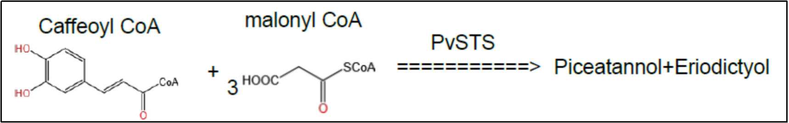
Fig. 12. The reaction of caffeoyl CoA and malonyl CoA
Therefore, experiments were designed according to the above principles to verify whether PvSTS has the catalytic activity of STS [5].
P-coumaryl CoA was used as a basic substrate, excess malonyl CoA was added as an excipient, and 10ug purified PvSTS were added for heat preservation. After 24 hours of insulation, the solution was permeated and separated to remove proteins and other macromolecular impurities. LC-MS detection was performed. The samples were repeated three times, and the blank control group was retained [12]. The spectral line corresponding to the product was measured and analyzed to determine whether the corresponding product was generated to determine the sample activity (Figure 5-8).
Declaration of Interest Statement
We declare that we have no financial and personal relationship with other people or organizations that can inappropriately influence our work.
The data availability statement
All data, models, and code generated or used during the study appear in the submitted article.
References
[1]Wang Shisheng, Zhao Weijie, & Liu Zhiguang. (2001). Bioactivity of natural polyhydroxyl stilbene compounds. Foreign Medicine: Plant medicine volume, 16(1), 9-11.
[2] Si Jianyong. (1994). Research overview of natural stilbene compounds. Natural product research and development, 6(4), 71-79.
[3] Austin, M. B., & Noel, J. P. (2003). The chalcone synthase superfamily of type III polyketide synthases. Natural product reports, 20(1), 79–110. https://doi.org/10.1039/b100917f
[4] Hanhineva, K., Kokko, H., Siljanen, H., Rogachev, I., Aharoni, A., & Kärenlampi, S. O. (2009). Stilbene synthase gene transfer caused alterations in the phenylpropanoid metabolism of transgenic strawberry (Fragaria× ananassa). Journal of experimental botany, 60(7), 2093-2106.
[5] Yu, C. K., Springob, K., Schmidt, J., Nicholson, R. L., Chu, I. K., Yip, W. K., & Lo, C. (2005). A stilbene synthase gene (SbSTS1) is involved in host and nonhost defense responses in sorghum. Plant physiology, 138(1), 393-401.
[6] Baneyx, F. (1999). Recombinant protein expression in Escherichia coli. Current opinion in biotechnology, 10(5), 411-421.
[7] Spriestersbach, A., Kubicek, J., Schäfer, F., Block, H., & Maertens, B. (2015). Purification of his-tagged proteins. In Methods in enzymology (Vol. 559, pp. 1-15). Academic Press.
[8] Lu, X., Zhao, X., Bai, C., Zhao, C., Lu, G., & Xu, G. (2008). LC–MS-based metabonomics analysis. Journal of Chromatography B, 866(1-2), 64-76.
[9] Liu, Q., Li, M. Z., Liu, D., & Elledge, S. J. (2000). [32] Rapid construction of recombinant DNA by the univector plasmid-fusion system. In Methods in enzymology (Vol. 328, pp. 530-549). Academic Press.
[10] Marbach, A., & Bettenbrock, K. (2012). lac operon induction in Escherichia coli: Systematic comparison of IPTG and TMG induction and influence of the transacetylase LacA. Journal of biotechnology, 157(1), 82-88.
[11] Hainfeld, J. F., Liu, W., Halsey, C. M., Freimuth, P., & Powell, R. D. (1999). Ni–NTA–gold clusters target His-tagged proteins. Journal of structural biology, 127(2), 185-198.
[12] Lee, M. S., & Kerns, E. H. (1999). LC/MS applications in drug development. Mass spectrometry reviews, 18(3‐4), 187-279.